왜 Indwell인가
하루 중 너무나 많은 것을 읽지만,
정작 내 생각은 남지 않는 시대.
Indwell은 그 반대편에 있는 공간입니다. 다른 사람의 생각을 소비하는 곳이 아니라, 자신의 생각을 붙잡고, 붙들고, 시간이 지나 다시 만나는 곳입니다.
포스트잇
지금 막 지나가는 생각. 제목도 필요 없습니다. 책상에 붙여 두고 다시 볼 만한 생각인지 지켜봅니다.
단상
조금 더 붙들어 보고 싶은 하나의 생각. 아직 끝나지 않았다면 열어 둘 수 있습니다.
책
여러 생각이 하나의 흐름으로 이어지는 곳. 여러 장의 목차를 가지며, 책에는 ‘완료’가 없습니다.
반드시 이 순서대로 쓸 필요는 없습니다. 중요한 것은 글의 길이가 아니라 생각이 머무는 시간입니다.
10:00 — 오전
생각이 자라다
생각이 머무는 시간만큼 글이 자랍니다.
지금 막 지나가는 생각. 제목도 필요 없습니다. 책상에 붙여 두고 다시 볼 만한 생각인지 지켜봅니다.
높은 가치를 지닌 것일수록 천천히 성숙한다.
예술은 하루아침에 이루어지는 법이 없으며, 훌륭한 사람은 하나의 깨달음으로 만들어지지 않는다. 수많은 깨달음과 배움이 오랜 시간 동안 유기적으로 엮여 좋은 방향으로 발전했을 때, 비로소 이루어져 간다.
생각이 포스트잇보다 커졌어요.
300자 제한은 글쓰기를 방해하기 위한 제한이 아닙니다. 생각이 포스트잇이라는 그릇보다 커졌다는 신호입니다.
늦게 피는 사람
천천히 성숙하는 것들
높은 가치를 지닌 것일수록 천천히 성숙한다.
예술은 하루아침에 이루어지는 법이 없으며, 훌륭한 사람은 하나의 깨달음으로 만들어지지 않는다. 수많은 깨달음과 배움이 오랜 시간 동안 유기적으로 엮여 좋은 방향으로 발전했을 때, 비로소 이루어져 간다.
여러 생각이 하나의 흐름으로 이어지는 곳. 여러 장의 목차를 가지며, 책에는 ‘완료’가 없습니다.
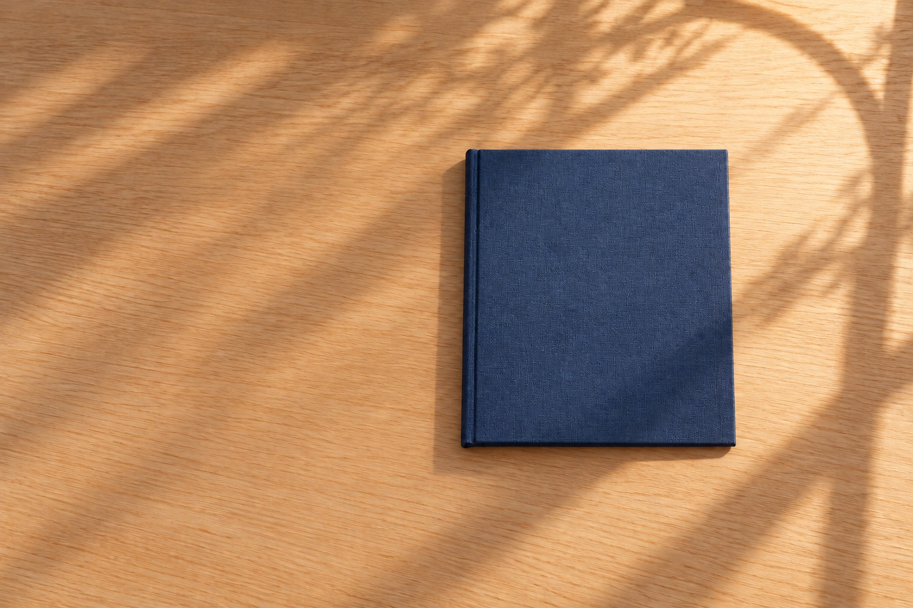
반드시 이 순서대로 쓸 필요는 없습니다. 중요한 것은 글의 길이가 아니라 생각이 머무는 시간입니다.
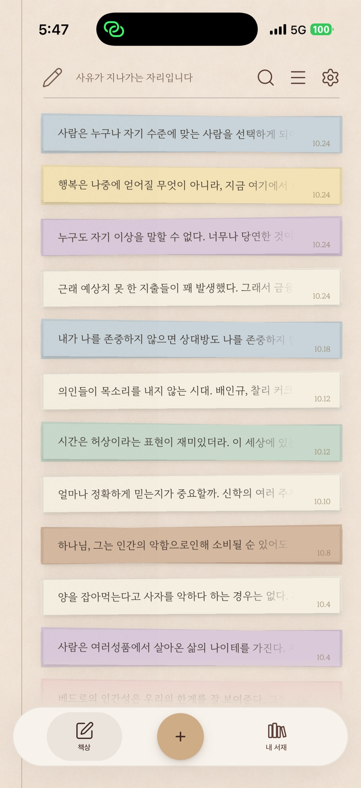
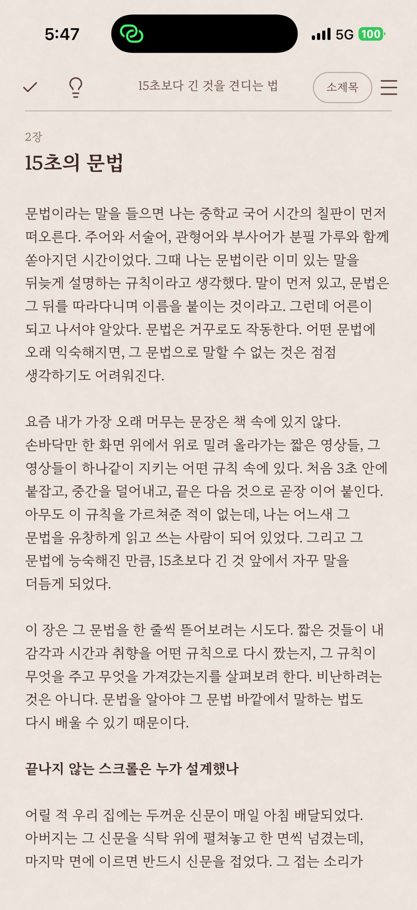
15:00 — 오후
기록이 쌓이다
쌓인 글은 삶의 궤적이 되고, 내가 어떤 사람이었는지를 남깁니다.
책상에서는 먼저 생각을 잡고, 서재에서는 그 생각을 더 오래 붙듭니다.
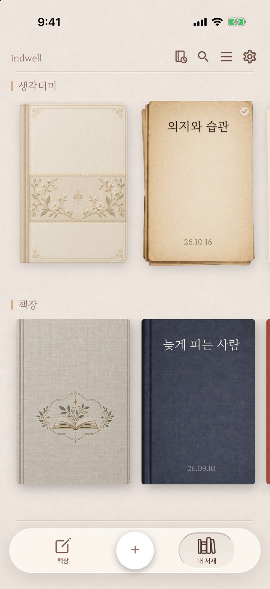
독후감
같은 책, 다른 나
같은 책을 다시 읽으면 그 아래에 2차, 3차 독후감으로 이어 씁니다. 나이가 들며 같은 책에 대한 생각도 달라지기 때문입니다.
데미안을 읽고
헤르만 헤세 · 1차
알을 깨고 나온다는 말이 처음엔 용기처럼 들렸다. 나도 언젠가 무언가를 깨고 나가야 한다고 믿었다.
데미안을 읽고, 2차 독후감
헤르만 헤세 · 2차
다시 읽으니 깨는 일보다 그 안에 머물렀던 시간이 먼저 보인다. 껍질 안의 시간도 나를 키웠다.
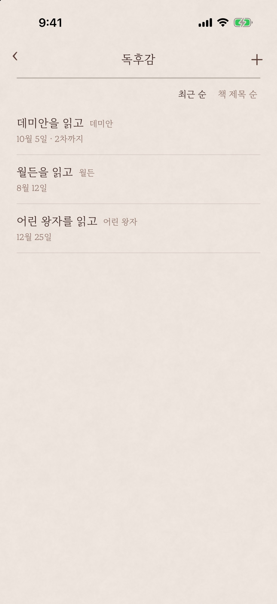
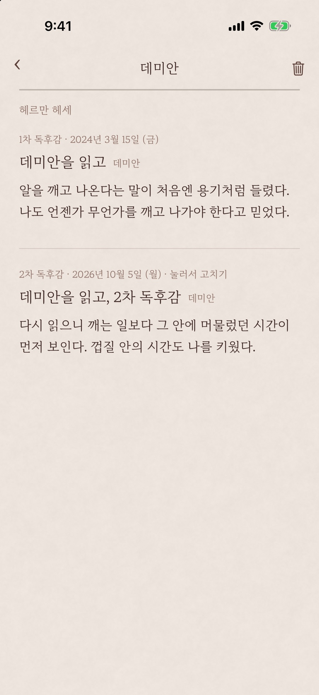
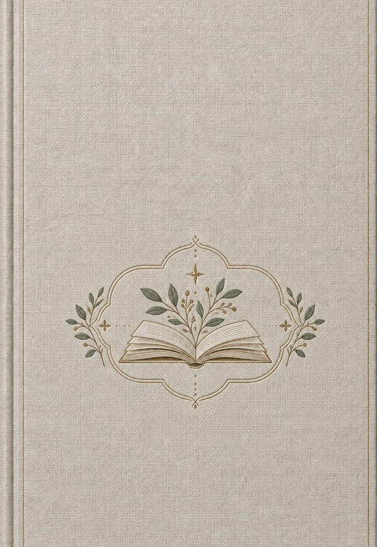
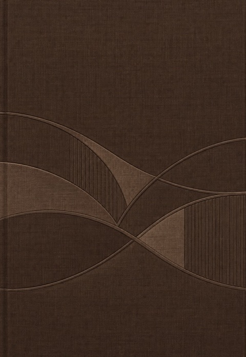
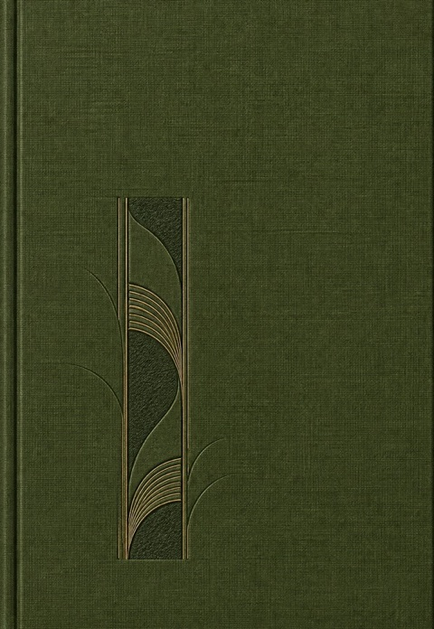
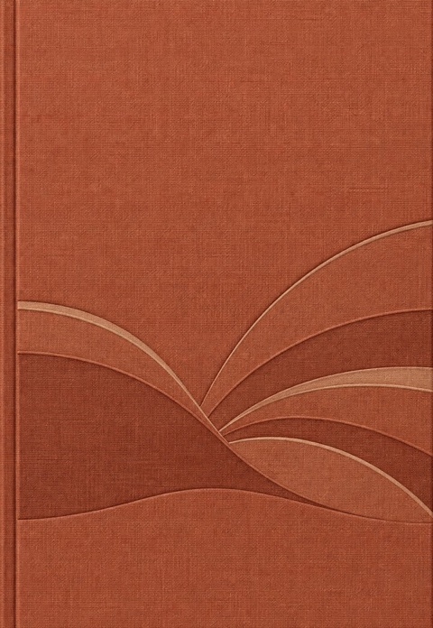
19:00 — 저녁 · 돌아온 글
오래된 문장을 다시 만나다
사람은 글을 쓰지만, 대부분의 글을 다시 읽지 않습니다. Indwell은 매일 저녁 7시, 오래전에 쓴 단상 하나와 책 하나를 서재 맨 앞에 다시 꺼내 놓습니다.
예전에는 보이지 않던 것이 보이고, 무심코 적어 둔 한 문장이 지금의 나에게 질문을 던지기도 합니다.
높은 가치를 지닌 것일수록 천천히 성숙한다.
붙들지 않은 것은 놓아주되, 시간이 지난 뒤 새로운 내가 오래전의 나를 다시 만날 기회를 남겨두는 것입니다.
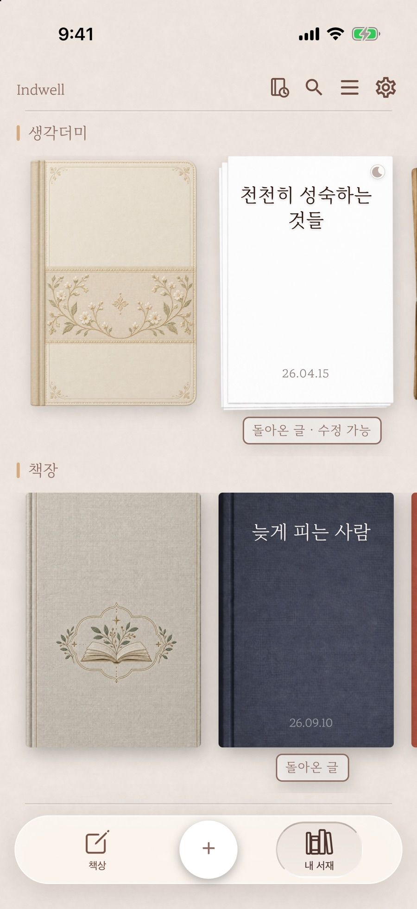
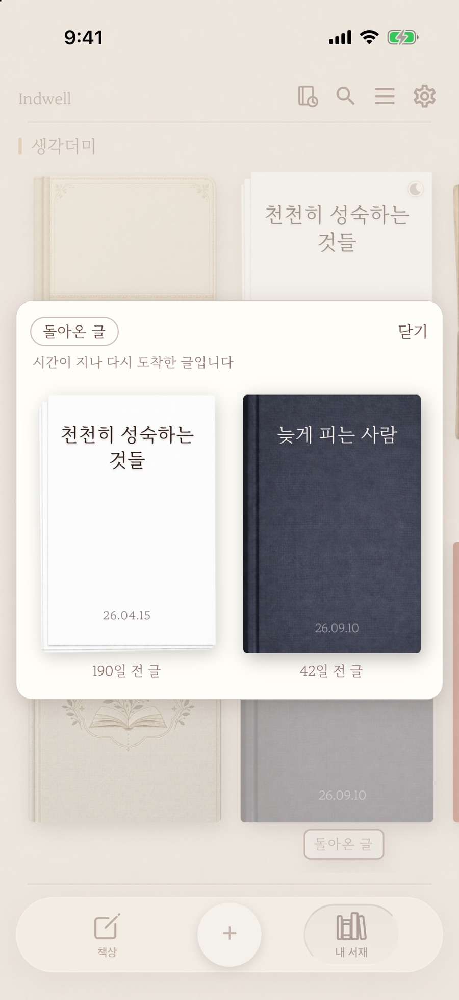
둘러보기
책상에서 서재까지
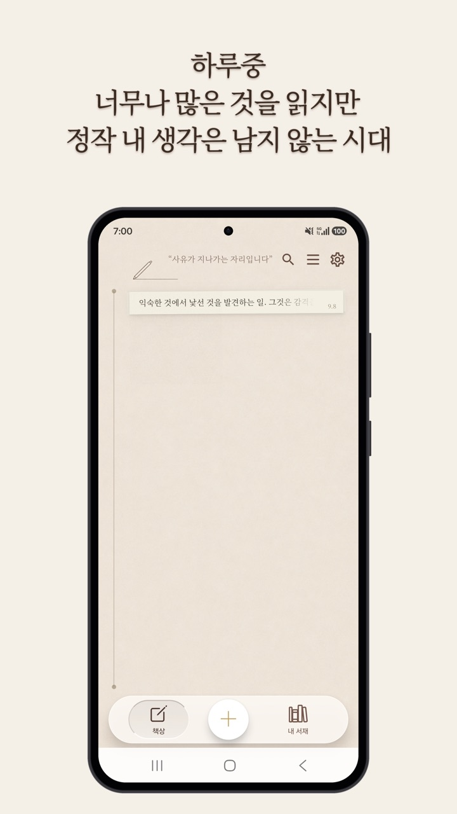
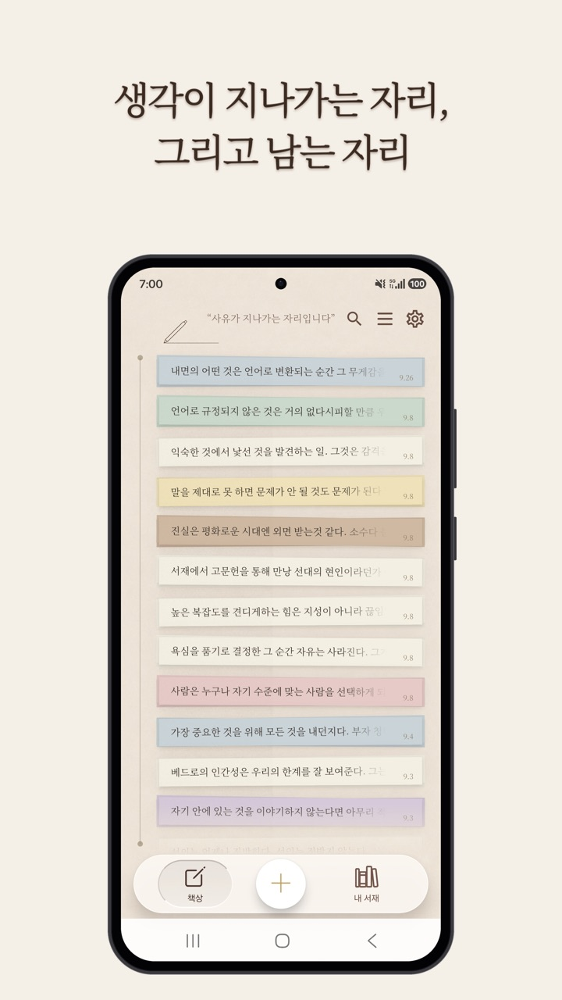
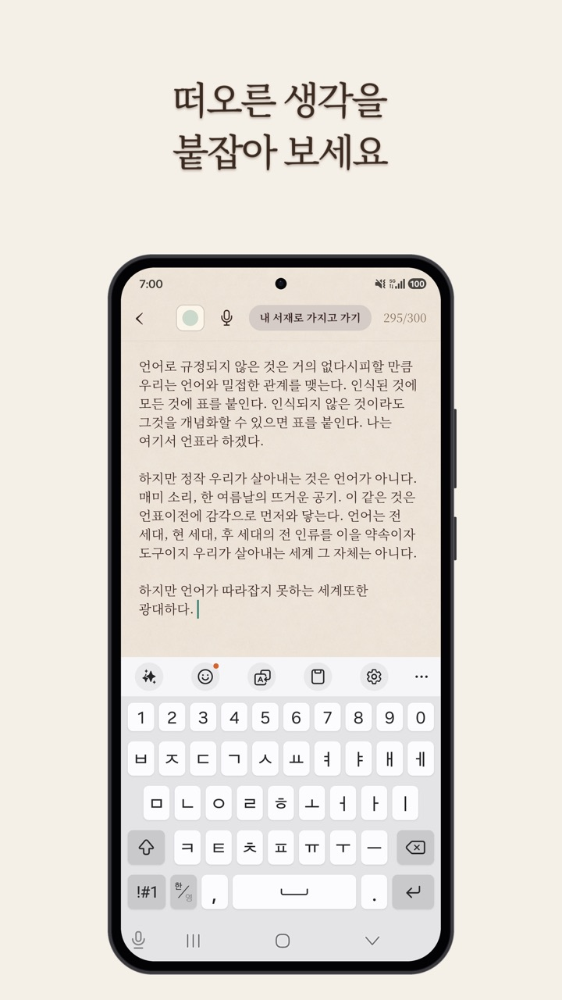
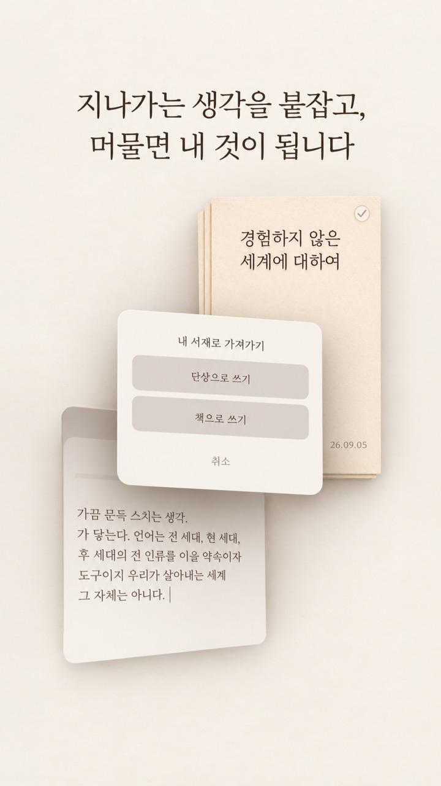
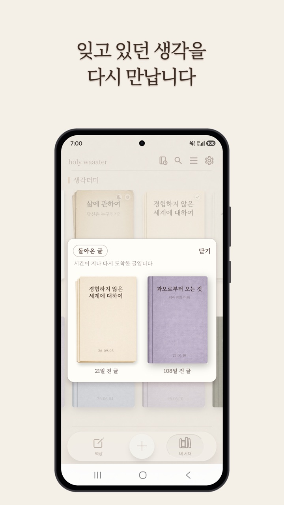
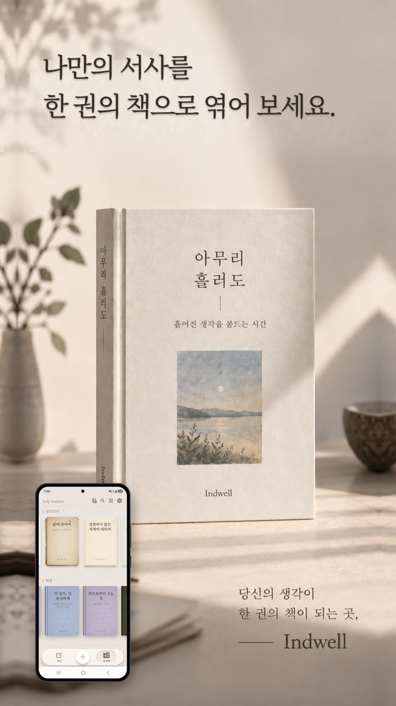
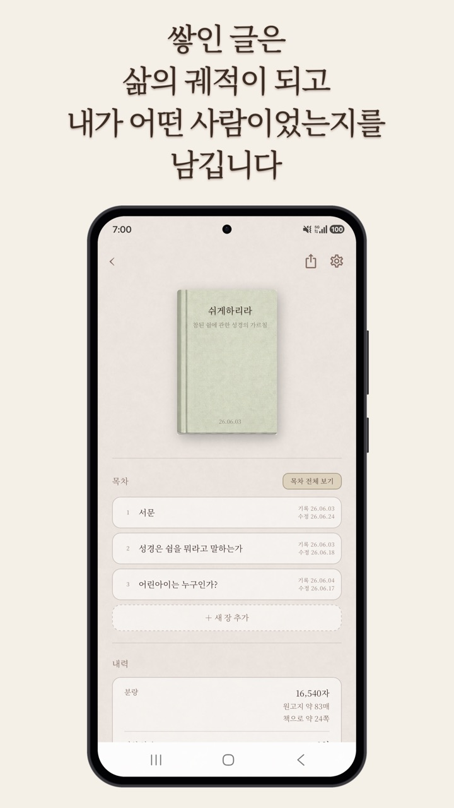
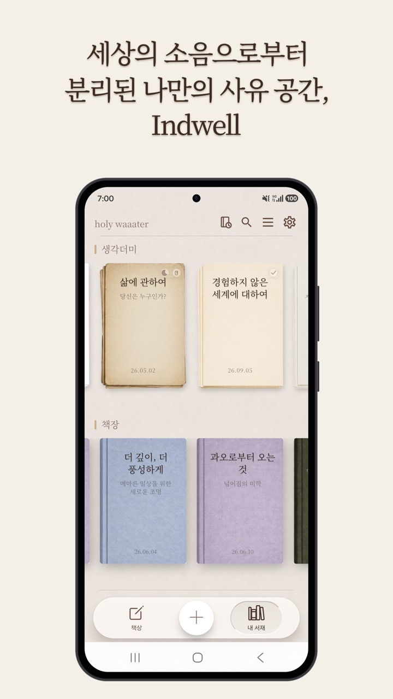
옆으로 넘겨 보세요 →
개인정보
당신의 글은
당신에게만 있습니다
- 계정도, 서버도 없습니다글·포스트잇·설정은 모두 휴대폰 안에 저장되며 개발자도 볼 수 없습니다.온전히 자신 안에서 깊어지는 공간으로 사용할 수 있습니다.
- 사유의 확장을 구조적으로 돕습니다포스트잇 → 단상 → 책 순으로 맥락을 확장해 갈 수 있는 시스템을 만들었습니다.
- 앱 잠금지문·얼굴 인식 또는 기기 비밀번호로 앱을 잠글 수 있습니다.
- 백업과 내보내기쓰신 글은 백업 파일 하나로 내보내고 가져옵니다. 개인 드라이브나 클라우드에 넣어서 보관해주세요. 책과 단상은 PDF로 내보낼 수 있습니다.
자주 묻는 질문
궁금한 점
휴대폰을 바꾸면 글은 어떻게 옮기나요?
환경설정의 백업에서 백업 파일을 내보낸 뒤, 새 휴대폰의 Indwell에서 그 파일을 가져오면 됩니다.
앱을 지우면 글도 사라지나요?
네. 글은 휴대폰 안에만 저장되기 때문에 앱을 지우면 함께 사라집니다. 지우기 전에 꼭 백업 파일을 내보내 개인 드라이브나 클라우드에 보관해 주세요.
개발자가 제 글을 볼 수 있나요?
볼 수 없습니다. 계정도 서버도 없어서 글이 휴대폰 밖으로 나가지 않습니다.
로그인 기능을 별도로 넣지 않았기에 개인정보나 비밀한 내용 등이 외부로 유출될 일이 없습니다. 자유롭게 이용하실 개인 공간으로 여기시면 되겠습니다.
작성창과 읽기 전용이 왜 따로 있나요?
작성창은 사용자가 글을 쓰는 것에 집중할 수 있게 고안된 곳이며, ‘읽기 전용’은 읽는 것에 집중할 수 있도록 고안된 기능입니다. 이 둘을 서로 직접적으로 오가지는 않지만 나중에 수정에 필요한 부분을 놓치지 않기 위해 읽기 전용 기능에도 단어별 마킹 기능을 구현해 놓았습니다.
21:00 — 밤 · 일기
하루를 남기다
일기는 하루에 한 편. 사흘 동안은 고쳐 쓸 수 있고, 그 뒤로는 덧쓰기만 남습니다.
해마다 같은 날이 오면, 그날의 일기가 ‘이전 년도의 오늘’로 돌아옵니다.
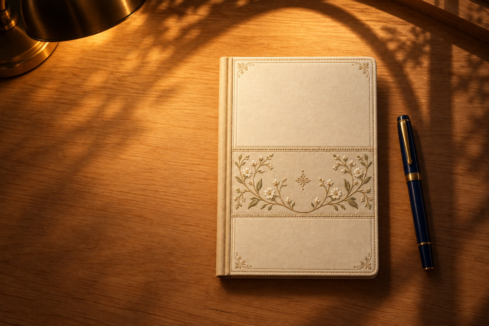
2026년 10월 21일 (수)
오래 앉아 있던 날
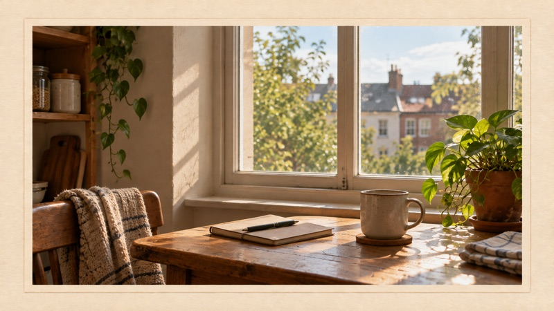
창가에 오래 앉아 있었다. 해야 할 일은 그대로인데 마음은 조금 정리되었다.
서두르지 않아도 되는 하루가 있다는 걸 오늘 처음 알게 된 것 같다.
2025년 10월 21일 (화)
우산
비가 온다길래 우산을 챙겼는데 끝내 오지 않았다. 괜히 하루 종일 하늘을 몇 번이나 올려다봤다.
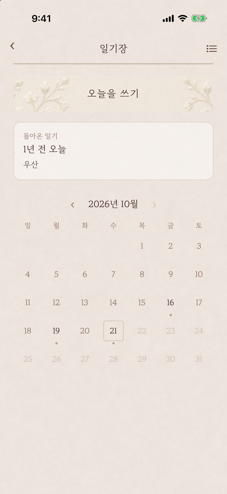
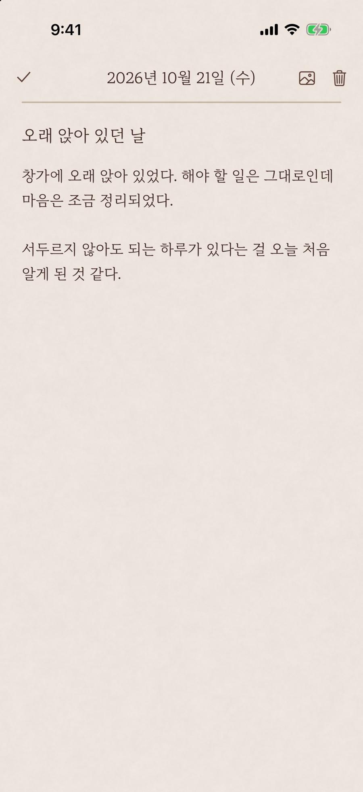
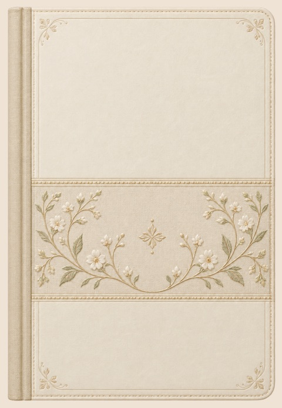
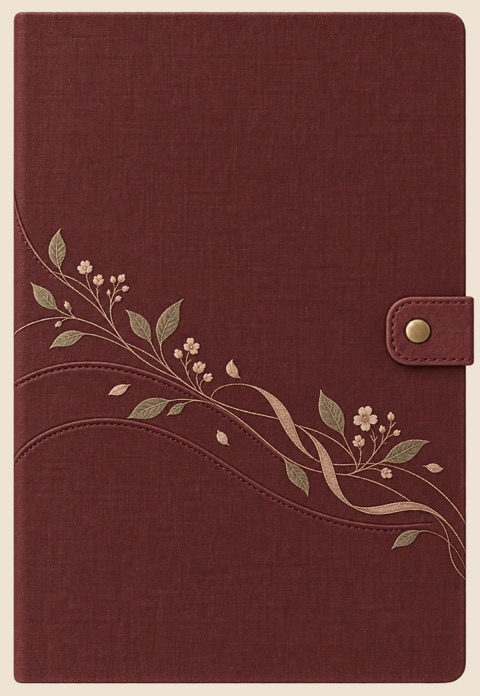
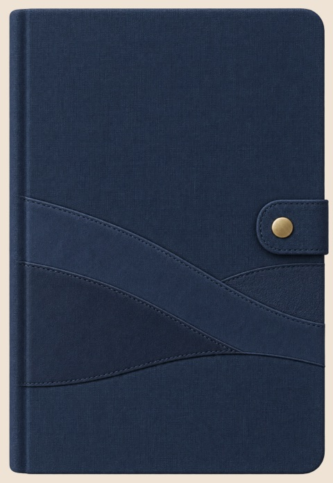
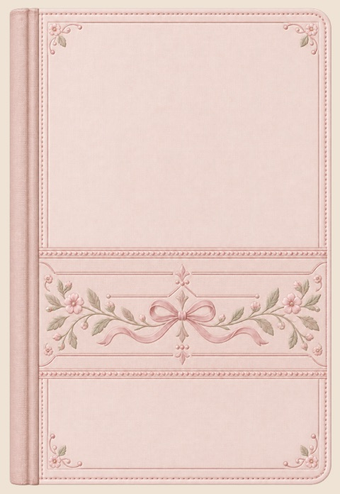
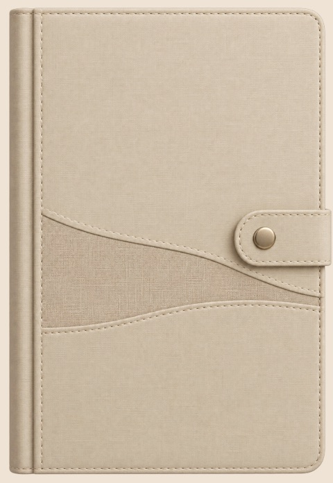
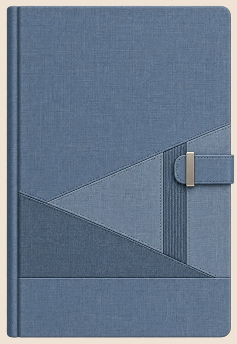
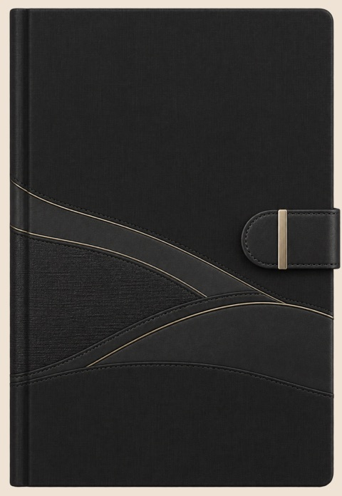
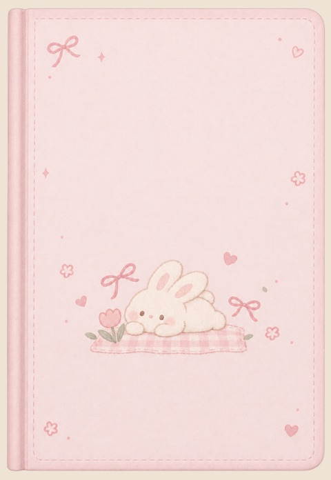